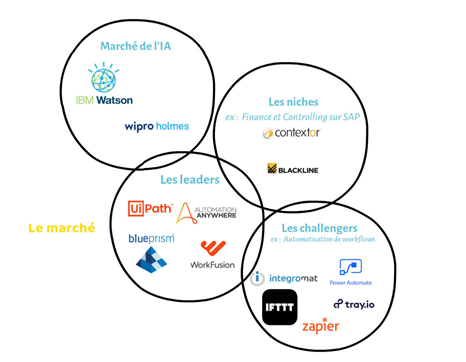
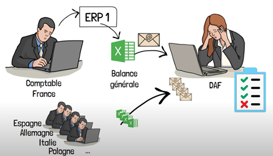

Les Acteurs de l’Automatisation Robotisée des Processus
À qui est destiné la RPA ?
Dans un premier temps avant de nous pencher sur les acteurs de la controverse nous allons voir dans un premier temps à qui est destiné ce procédé, les acteurs sont nombreux, on peut par exemple citer les banques et autres services du monde de la finance sur des processus de gestion de prêts, d’exécution de transaction, des clôtures comptables ou encore des audits. Un autre secteur grandement aidé par le processus de RPA est l’assurance où elle est utilisée pour de la gestion des réclamations ou encore pour le traitement des appels. Le monde de la grande distribution est aussi touché par la RPA, et ce, pour la gestion d’inventaires, de promotions ou encore la gestion des retours.[1]
Les fournisseurs de ces solutions
Pour ce qui est des acteurs qui fournissent ces logiciels, nous avons dans ceux qui dominent le marché UiPath, Automation Anywhere, Blue Prism ou encore Work Fusion, leurs concurrents sont souvent sur des marchés précis comme dans celui de la finance où l’on peut retrouver Contextor et Blackline. Il y a aussi des starts up qui ont explosé récemment par exemple IFTTT, Zapier, Integromat, Power Automate ou encore Tray. Dans ce marché, on peut aussi retrouver des entreprises qui travaillent dans le domaine de l’IA, car ce sont deux secteurs sont très proches avec des entreprises telles que IBM Watson ou Wipro Holmes. [1]
Les acteurs en faveur de la RPA
Pour ce qui est des acteurs de la controverse, nous avons les acteurs qui pensent que la RPA ne peut pas être un danger pour l’emploi et que la seule chose qu’elle va entrainer est une modification des métiers en les rendant moins répétitifs et plus attractifs, et ceux en limitant les tâches longue, fastidieuse et récurrente, comme dans le cas d’un responsable de la comptabilité d’un pays dans un groupe international qui dois tous les mois réaliser un processus de clôture des comptes ce qui est une tâche répétitive et à faire en très peu de temps. Il doit extraire la balance générale de son pays, puis l’envoyer par mail sous forme d’Excel à son directeur administratif et financier, qui reçoit la balance générale de tout le pays dans lesquels le groupe est implanté, et qui dois réaliser manuellement la consolidation de ses fichiers et effectuer un grand nombre de contrôles avant de donner le départ pour la suite des étapes de la clôture. [1] [2] [3]
Ces tâches pourraient être réduites à de la simple vérification des données avant d’être envoyé, voire même complètement automatisée, ce qui laisse beaucoup plus de temps aux employés concernés pour se concentrer sur des missions plus importantes qui ne peuvent être faite que manuellement. Toujours dans la modification des métiers, la RPA a aussi permis de faciliter la détection de tumeur, ce qui permet d’avoir du personnel moins qualifié pour ce genre de tâche ce qui est notamment utile dans des pays en voie de développement. [4] Microsoft est aussi un acteur en faveur de la RPA, car il juge qu’il est essentiel d’avoir un logiciel pour simplifier les projets RPA dans le kit de base de Windows 11 ce qui facilitera grandement l’intégration de ces logiciels dans les réseaux des entreprises. [5] Par ailleurs, Microsoft est aussi implanté dans ce marché, car ils ont une start-up nommée Power Automate qui fournis ce genre de services. [1]
Les acteurs contre la RPA
Les acteurs en défaveur de ce procédé sont assez peu nombreux, une grande partie de leur argumentaire se base sur le fait que certaines études ont prouvé que pour 100 emplois détruits, 16 serait créer ce qui entraîneras une raréfaction des emplois sur les années à venir. [1] Certaines personnes parlent aussi d’une baisse du pouvoir d’achat à l’échelle mondiale qu’entraînerait la RPA notamment à cause d’une réduction du personnel massive dû à la réduction des tâches longues et répétitives. [7] Un des points critiqués est aussi le problème de la cybersécurité où les entreprises produisant les services de RPA pourraient potentiellement récupérer des données sensibles de leurs clients, ou encore les cyberattaques qui serrait potentiellement facilité par la mise en œuvre de ces solutions qui sont très récentes et qui pourrait potentiellement avoir des failles que des hackers pourrait exploiter.